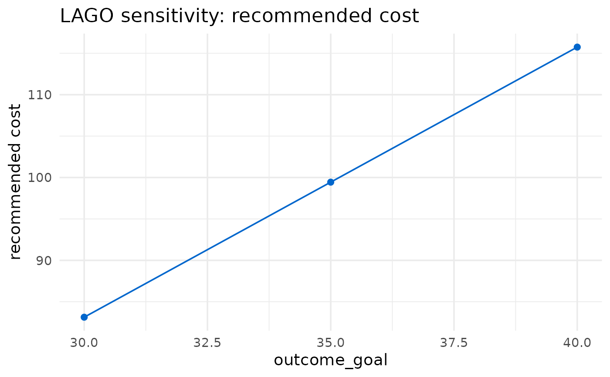

Trial designers often are unsure about some of the inputs to [lago_optimization()], chiefly the outcome goal and the assumed intervention costs. `lago_sensitivity()` answers "how much does the recommendation move if that input is different?" by re-running [lago_optimization()] across a sweep of one input and reporting how the recommended intervention, its cost, and the estimated outcome change. This turns a single point recommendation into a robustness picture: a stringency curve for the outcome goal, or a straight line for a uniform cost rescaling.
The confidence set is the slow part of [lago_optimization()] and is not needed to see how a recommendation moves, so every run is forced to `include_confidence_set = FALSE` for speed. A single run failing does not abort the sweep: its outputs are recorded as `NA` and a single warning names the failed values afterwards.
Arguments
- object
An optional `lago` result from [lago_optimization()]. When supplied, the baseline optimization arguments are taken from the call it carries (so the whole call need not be retyped), and any arguments in `...` override those stored values. When `NULL` (the default), the baseline arguments come from `...`. Passing an object that is not a `lago` result is an error, as is passing a `lago` result from an older version of the package that did not record its call arguments.
- ...
The baseline [lago_optimization()] arguments (the user's own optimization call). They are forwarded unchanged to every run. When `object` is not supplied, these are the baseline arguments and the user typically copies their `lago_optimization(...)` call in and simply adds `parameter` and `values`. When `object` is supplied, anything here overrides the arguments stored on the object. `include_confidence_set` and `quiet` supplied here are overridden (see Details).
- parameter
A single character string naming what to vary. Two modes:
The name of a scalar numeric argument of [lago_optimization()] that affects the recommendation (for example `"outcome_goal"`, `"power_goal"`, or `"shrinkage_threshold"`). Each run overrides that argument with one element of `values`. Vector-valued arguments such as `intervention_lower_bounds`, and confidence-set-only arguments such as `confidence_set_alpha` (the confidence set is not computed during a sweep), are rejected.
The special string `"cost_multiplier"`: each run multiplies every coefficient of every vector in the baseline `cost_list_of_vectors` by one element of `values`, so `values = c(0.8, 1, 1.2)` evaluates the costs at 80%, 100%, and 120%. This mode requires `cost_list_of_vectors` in `...` and all `values` must be positive.
- values
A non-empty numeric vector, all finite. One run per element.
- quiet
A boolean forwarded to [lago_optimization()]. Defaults to `TRUE` so the sweep is not noisy. Genuine warnings about the data or model fit from each run are still shown.
Value
An object of class `"lago_sensitivity"`, which is a `data.frame` with one row per element of `values` and columns:
- value
The swept value for that run.
- <component>
One numeric column per intervention component, named by the component, holding its recommended value for that run.
- rec_int_cost
The cost of the recommended intervention.
- est_outcome_goal
The estimated outcome at the recommendation.
- status
`"ok"` for a successful run, otherwise `"error"`.
The object carries attributes `parameter` (the swept string), `component_names` (the component column names), `baseline` (the full [lago_optimization()] result at the baseline value, i.e. multiplier 1 for `"cost_multiplier"` or the value supplied in `...` for a named parameter, or `NULL` if not present), and, when any run failed, `error_messages` (the error text named by the failed values).
Details
Each run builds the modified argument list from `...`, forces `include_confidence_set = FALSE`, sets `quiet = quiet`, and calls [lago_optimization()] inside `tryCatch()`. A run that errors contributes a row of `NA` outputs with a non-`"ok"` status instead of stopping the sweep.
See also
[lago_optimization()]
Other LAGO functions:
get_confidence_set(),
lago_optimization(),
lago_report(),
visualize_cost()
Examples
# \donttest{
# Recommended flow: fit once, then sweep the fitted result. Passing the
# `lago` result reuses its call, so there is no need to retype the
# arguments. Each run is a separate optimization, so this is wrapped in
# \donttest to keep automated checks fast; the confidence set is off
# internally so the sweep still runs quickly.
opt <- lago_optimization(
data = mtcars,
outcome_name = "mpg",
outcome_type = "continuous",
glm_family = "gaussian",
link = "identity",
intervention_components = c("gear", "qsec"),
intervention_lower_bounds = c(0, 0),
intervention_upper_bounds = c(10, 350),
cost_list_of_vectors = list(c(0, 4), c(4, 6)),
outcome_goal = 30,
outcome_goal_intention = "maximize",
include_confidence_set = FALSE,
quiet = TRUE
)
sens <- lago_sensitivity(
opt,
parameter = "outcome_goal",
values = c(30, 35, 40)
)
sens
#>
#> ── LAGO sensitivity analysis ──
#>
#> Varied outcome_goal across 3 runs; 0 failed.
#> value gear qsec rec_int_cost est_outcome_goal status
#> 1 30 10 6.522269 83.13361 30 ok
#> 2 35 10 9.239851 99.43911 35 ok
#> 3 40 10 11.957433 115.74460 40 ok
#> rec_int_cost ranges from 83.13361 to 115.7446 as outcome_goal goes from 30 to
#> 40.
plot(sens)

# The same sweep spelled out directly (no fitted object). This is the
# equivalent long form and gives the same result.
sens2 <- lago_sensitivity(
data = mtcars,
outcome_name = "mpg",
outcome_type = "continuous",
glm_family = "gaussian",
link = "identity",
intervention_components = c("gear", "qsec"),
intervention_lower_bounds = c(0, 0),
intervention_upper_bounds = c(10, 350),
cost_list_of_vectors = list(c(0, 4), c(4, 6)),
outcome_goal_intention = "maximize",
parameter = "outcome_goal",
values = c(30, 35, 40)
)
# How sensitive is it to the assumed costs? A uniform rescaling never changes
# which intervention is cheapest, so the recommendation is unchanged and the
# cost scales linearly with the multiplier. `...` overrides on top of the
# fitted object are used here to switch the swept parameter.
cost_sens <- lago_sensitivity(
opt,
parameter = "cost_multiplier",
values = c(0.8, 1, 1.2)
)
cost_sens
#>
#> ── LAGO sensitivity analysis ──
#>
#> Varied cost_multiplier across 3 runs; 0 failed.
#> value gear qsec rec_int_cost est_outcome_goal status
#> 1 0.8 10 6.522269 66.50689 30 ok
#> 2 1.0 10 6.522269 83.13361 30 ok
#> 3 1.2 10 6.522269 99.76034 30 ok
#> rec_int_cost ranges from 66.50689 to 99.76034 as cost_multiplier goes from 0.8
#> to 1.2.
# }